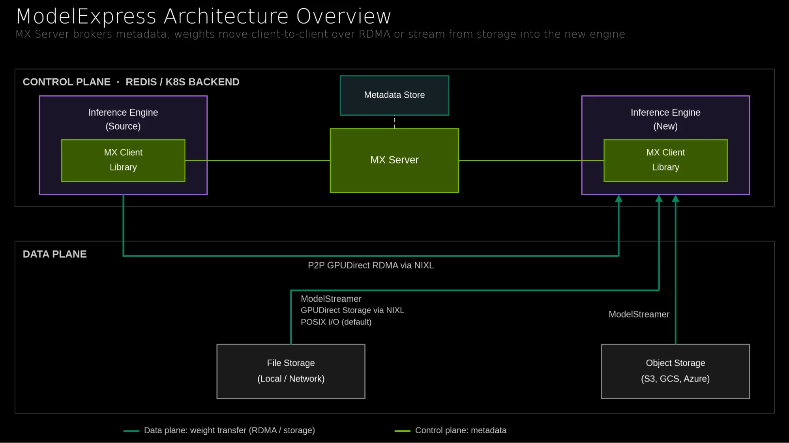
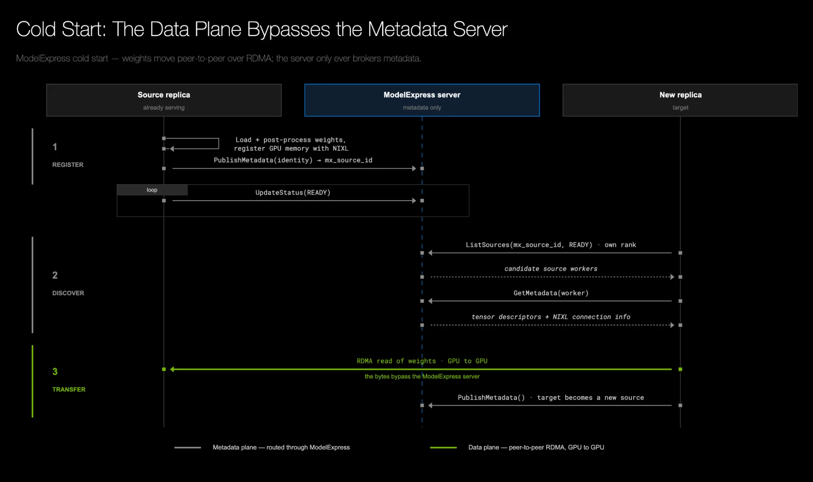
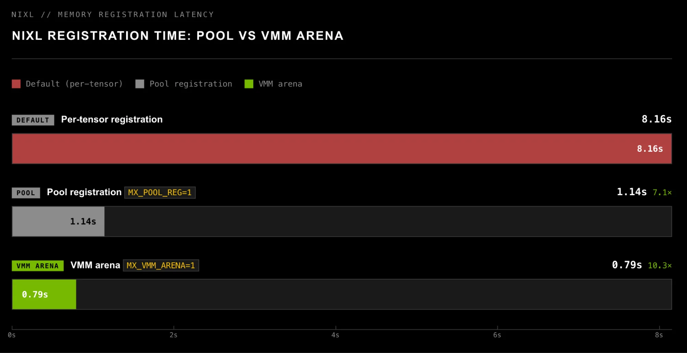
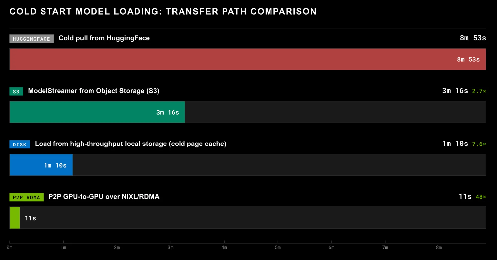
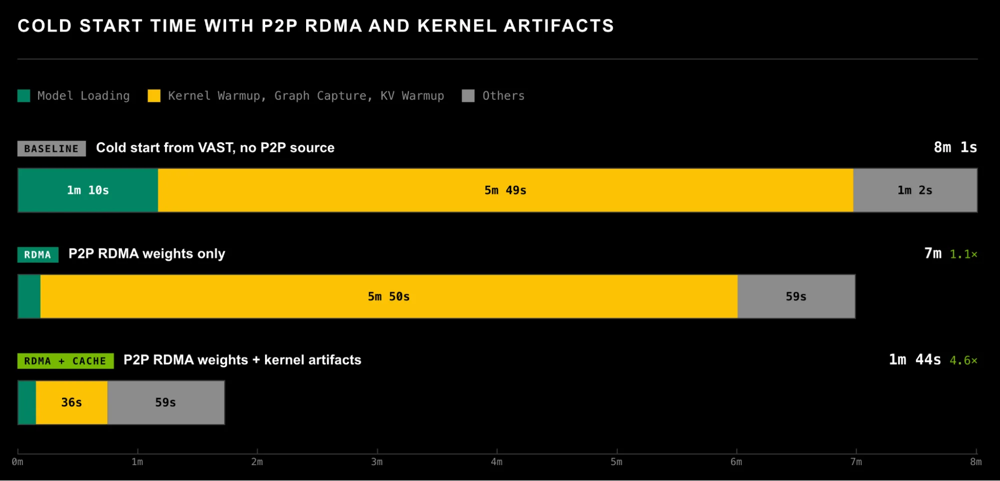
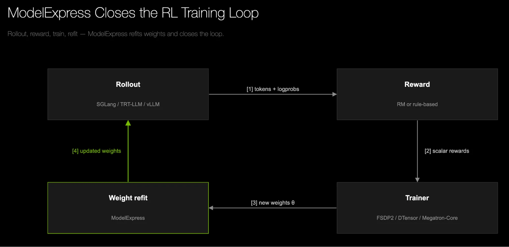

每个字节的移动都有成本。当模型checkpoint膨胀到数百GB甚至TB级别，这个成本急剧放大。冷启动要从远程存储拉权重到GPU，自动扩缩容要填充每个新副本，RL后训练要持续把更新后的权重从训练器分发到rollout worker：看似不同的工作流，背后是同一个问题：花在搬权重上的时间。
NVIDIA ModelExpress（MX）的核心思路很简单：加载模型前，先问哪里已有兼容副本。 不是把每个副本都当作独立冷启动，而是选择最快的可用来源和传输路径。当serving peer已持有兼容权重时，MX通过NIXL的P2P RDMA直接从GPU到GPU传输，绕过对象存储、本地磁盘和主机内存。当没有peer可用时，MX从最快的可用存储路径引导。
第一个worker没有peer可用，必须从外部存储引导。MX提供三条路径，按优先级自动选择：
当checkpoint在云存储桶中时，MX使用Model Streamer多线程张量读取器并发拉取safetensors，经过可复用的CPU staging buffer直接进入GPU。checkpoint从不落地磁盘，消除了中间下载、重新加载和存储卷的开销。在tensor-parallel部署中，参与rank分担远程读取并通过NCCL共享结果，而不是每个rank独立下载完整checkpoint。
当集群维护共享磁盘缓存时（如K8s持久卷），MX的Model Cache Service将多个副本的并发下载折叠为一次协调下载：原子声明在Metadata Store中选择一个下载者，其余副本跟踪其进度并复用缓存副本。如果10个副本同时拉取806 GiB的DeepSeek-V4 Pro模型，原本需要约8 TiB的入口带宽，现在集群只付一次外部下载成本。
支持GPUDirect Storage（GDS）时，MX通过NIXL的多线程GDS后端直接将checkpoint从本地存储读入GPU内存，绕过主机内存和staging副本。不支持GDS时自动检测并回退到ModelStreamer的管道化读取：多OS线程并发读取safetensors到可配置的CPU缓冲区，已完成张量移至GPU的同时后续读取继续并行，重叠磁盘I/O与GPU放置。
一旦第一个worker开始服务，它的权重已驻留在GPU内存中，完成后处理并布局好供推理引擎使用。后续每个worker都应该从peer通过P2P RDMA直接加载。
MX控制平面通过Redis或K8s CRD发现兼容peer，计算 `mx_source_id`（基于模型和运行时配置）确保只有布局一致的peer可互传。控制平面只处理元数据，从不触碰权重字节本身。 数据平面使用NIXL作为默认传输引擎，其可插拔后端支持InfiniBand、RoCE、NVLink、EFA等多种网络。
新replica加载完成后加入源池，后续replica就有了更多加载源。每次成功传输都在扩大源池，将scale-out转化为GPU到GPU的扇出，而非重复冷加载。


NIXL做RDMA前需要注册GPU内存（ibv_reg_mr获取rkey）。大模型有数万个张量，逐个注册的开销不可忽视。MX提供两种优化策略，按侵入性递增：
Pool注册：每个底层cudaMalloc分配只注册一次而非每个张量。典型模型上注册次数减少80-99%，传输语义不变。
VMM Arena注册（更激进）：安装一个CUDAPluggableAllocator，将所有加载时分配路由到单个16 TiB虚拟地址arena，加载完成后将整个已用范围注册为一个dmabuf支持的内存区域。注册从每个张量一次坍缩为总共一次，每个张量描述符只需携带偏移量。

MX在启动时探测可用能力，自动跳过环境不支持的路径。优先级顺序：
①P2P RDMA → ②ModelStreamer → ③GPUDirect Storage → ④默认加载器（主机staging POSIX I/O）
如果某路径不可用或在修改模型状态前失败，自动fall through。如果失败发生在权重开始落地后，MX会重新初始化模型再继续，永远不会提供部分写入的权重。 这种能力驱动的设计让MX核心保持硬件和软件无关，平台特定的加速路径只在支持时启用。
在8×B200 GPU + ConnectX-7 NIC节点上测试DeepSeek-V4-Pro（TP=8），MX的端到端冷启动时间从8分钟降到1分44秒，包含权重加载和内核缓存继承。其中权重加载本身在P2P模式下仅需不到10秒。
Ablation实验显示，P2P RDMA路径相比从对象存储加载带来最大的单次加速收益，而内核缓存继承则解决了权重加载加速后暴露的新瓶颈：编译时间。两者叠加，才实现了从8分钟到1分44秒的跨越。

权重进入GPU内存后，模型还不能立即开始服务。首次前向传播时，引擎需要JIT编译和autotune内核（torch.compile、Triton、DeepGEMM、TileLang等）并捕获CUDA Graph。对于DeepSeek-V4 Pro，这需要几分钟，一旦MX将权重加载延迟降到10秒以下，编译时间反而成了主导成本。
MX的Artifact Transfer API解决了这个问题：当模型、软件栈和GPU架构匹配时，一个replica支付编译成本，其余replica继承生成的缓存。API将这些文件缓存通过NIXL的CPU到CPU RDMA路径在replica间传递，验证后安装到目标引擎的缓存目录中。这消除了K8s中共享RWX卷的需求，同时 `mx_source_id` 的artifact特定校验防止了跨不兼容replica的复用。

以上所有场景假设权重加载后固定不变。RL后训练打破了这个假设：训练器每个step更新策略，推理actor必须在下一轮生成前拿到新权重。MX通过四个阶段驱动refit：
Publish：每个训练器rank向MX发布它已拥有的张量或shard，附带形状、dtype、放置位置和参数映射的元数据。
Discover：rollout worker通过MX查找请求的权重版本及其可用来源。
Plan：接收方将发布的ownership信息映射到自己的目标布局，识别哪些源包含所需的张量或范围。
Pull, convert, and load：接收方对源发起单边RDMA读取，直接拉取所需权重。
MX还正在测试delta weight diff refit用于跨集群权重传输，这是Fireworks/Cursor、Cognition等团队在最近RL运行中使用的技术。MX已原生集成vLLM、SGLang，并支持Dynamo和llm-d等推理框架。

参考：https://developer.nvidia.com/blog/modelexpress-distributing-model-artifacts-at-the-speed-of-light/